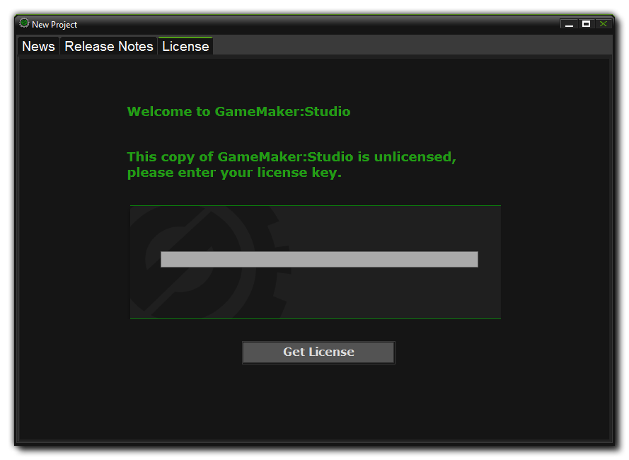

Activating GameMaker:Studio 激活GMS
GMS在使用之前需要联网激活许可证。GameMaker:Studio requires an internet connection to activate your licence before you can use it.
一旦你安装了你的版本的GMS，第一次运行的时候你将会被提示输入许可证密钥（除非你下载了免费版或者你通过Steam购买了程序，这一步将会被跳过）。
Once you have installed your version of GameMaker:Studio you will be prompted to enter a License Key the first time you run the program (unless you have downloaded the free version or you have bought the program through Steam in which case this step can be skipped as your licence is tracked by Steam for you).
授权文件也会通过你购买时使用时邮箱地址发送给你，如果你已经通过我的帐户（My Account）登录到YoYo游戏商店，它也会绑定到该帐户，你可以在任何有必要的时候取回它。如果你没有登录到YoYo游戏商店，这个邮件地址也会包含新帐户的详细内容，并且已经使用你提供的邮箱地址自动设定了新帐户。这些也可以让你从YoYo网站找回你的GMS许可证。一旦你已经完成了许可证的认证，就可以准备使用GMS了。
The license file will also be emailed to you using the email address you entered during purchase, and if you've logged into the YoYo Games store through the "My Account" section, it will also be tied to that account, allowing you to retrieve it at any time should that be necessary. If you don't have a YoYo Games login, the email will also contain details of the new account that has been automatically setup using the email address you have provided. This will, again, let you retrieve your GameMaker:Studio License code from the YoYo Games website. Once you have completed the licence process, GameMaker:Studio will be ready to use!
如果哪天你需要重新安装GMS，可以在这里找到最新的版本和所有可用的更新。
If at anytime in the future you need to re-install GameMaker:Studio, the latest version, complete with all available updates, can always be found here.
你有义务确认保存好邮箱地址和许可证密钥，重新安装GMS的时候将会用到它们。
It is your responsibility to make sure you save the email, and the Licence Key itself, as you will need it anytime you want to reinstall GameMaker:Studio.

重要事项 Important
GMS使用时本身并不要求联接互联网，它只是偶尔访问以保持许可证激活。如果很长的时间内你的电脑长期都不能联接网络，你可以从YoYo游戏网站下载许可证检测文件，然后将自动更新系统指向它。如果你未能提供有效的授权文件，或者请求时没有联接到互联网，你的GMS副本将不能工作，直到解决这些问题。
While GameMaker:Studio itself does not require an internet connection to be used, it will require occasional access to maintain the license activated. If you cannot connect your computer to the internet for any long period of time, you can download the license check file from the YoYo Games website, and then point the auto update system to it. If you fail to provide a valid license file, or there is no internet connection when requested, your copy of GameMaker:Studio will not work until such time as this is resolved.
额外的模块 Additional Modules
注意 : 如果你已经更新到了GMS专业版，这些额外的模块只能通过购买获得。
NOTE : These extra modules can only be bought if you have already upgraded to GameMaker:Studio - Professional.
购买后，GMS将出现许多导出选项：Windows 和 Mac OSX（如果是从Steam购买的程序还会包括Steam创意工坊的导出选项），以及Windows 8（本地）和Windows 8（JS）。额外的模块可以轻松的从YoYo游戏支付平台购买到。一旦到了那一步，你仅需要填写所需的信息（邮箱地址和GMS基本许可证），然后选择你希望添加的目标模块或模块。完后之成，点击“继续（Preceed）”将带你到支付页面以确认这次购买。最后一旦确认，你将获得一份新的许可证和邮件，并发送到你提供的邮箱里。
GameMaker:Studio comes with a number of export options included when you buy it : Windows and Mac OSX (and Steam Workshop if you bought the program from Steam), as well as Windows 8 (Native) and Windows 8 (JS). However additional modules can be purchased easily from the YoYo Games Checkout. Once there, all you have to do is fill in the required information (e-mail address and GameMaker:Studio base license), then select the target module or modules that you wish to add. After this has been done, clicking "Proceed" will take you to the purchase page to confirm the sale. Finally, once confirmed, you will be given the new license and an email with it will be sent to the address you have given.
要使用这个许可证，你必须现在启动GMS并进入“帮助（Help）”，“更新许可（Update License）”，然后在适当的区域输入新的许可证。做完这一步后，关闭GMS，重新启动，并享受你所购买的新模块的功能。
To use this License, you must now start GameMaker:Studio and go to "Help", "Update License" and enter your new license in the appropriate area. Once that is done, you should close GameMaker:Studio and re-start it to enjoy the functionality of the new modules that you have purchased.
从Steam购买额外的模块 Buying Additional Modules From Steam
如果你是通过Steam购买的GMS，你也能很容易的从相同的服务通道在线购买这些模块，并不需要许可证，因为Steam将处理这些细节。要访问可用的模块，必须运行你的Steam客户端，找到游戏库，右键点击GameMaker:Studio条目。从弹出的右键菜单你应该选择“查看可下载内容（View Downloadable Content）”，它将打开应用属性窗口，在哪里可以选择、购买并安装你需要的模块。
If you bought GameMaker:Studio through Steam you can also purchase these modules easily on-line from the same service, with no licence being required as Steam keeps track of your details for you. To access the available modules, you must run your Steam Client, go to the Library and right click on the GameMaker:Studio entry. From the right click menu that pops up you should select the option View Downloadable Content which will open the application Properties window and there you can select, buy and install the module of your choice.
-断水-